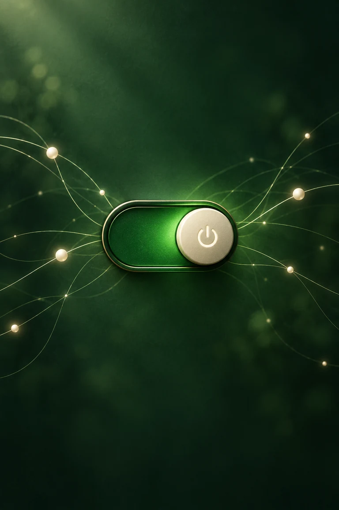

Internet access control
Internet on.
Internet off.
For Windows.
Turn your PC's internet access on or off from the icon next to the clock. Switch immediately or schedule a change for later.
Download for WindowsFree to use · Windows 10 & 11 (64-bit) · No account needed

Internet on or offInternet off.
How it works
Right next to the clock.
One click to switch.
Left-click NetOn's icon to turn internet access on or off. Right-click for scheduling, settings, or to open the main window.
OFF switches off your PC's network connections, including Ethernet and Wi-Fi. ON restores the connections that were on before you switched off.
Green means on.
Network connections are switched on.
Red means off.
Network connections are switched off.
Right-click the icon for settings or to exit.
Installation
Download. Install. Click.
- 01
Download NetOn
Get the Windows installer using the button above.
- 02
Follow the steps
Open the downloaded file and follow Setup. Leave Start NetOn checked to open it when Setup finishes.
- 03
Open NetOn
Accept the Windows permission prompt. NetOn's icon appears next to the clock. You can also open it from the Start menu.
Using NetOn.
Where is the NetOn icon?
Look next to the clock in the Windows taskbar. If it isn't visible, click the small arrow to see the hidden icons.
What happens when I turn it back on?
NetOn restores the connections that were on before you switched off. Your PC can then reconnect to an available network.
Can I schedule a change?
Right-click the icon and choose Schedule to turn internet on or off after 10 minutes, 30 minutes, 1 hour, 2 hours, 4 hours, 8 hours, or 24 hours. The menu shows a countdown and lets you cancel or replace the schedule.
Keep NetOn running in the tray until the scheduled time. Choosing Exit NetOn cancels the schedule. If your PC sleeps past that time, the change runs when NetOn resumes.
What can I do in the main window?
Choose Open NetOn from the tray menu. The window has an on/off switch, your external IP address with a copy button, Settings, and Show connection details. Connection details are hidden when you open the window.
What settings are available?
Choose a light or dark appearance, or follow your Windows setting. You can select English voice announcements or an installed Windows voice, mute sounds, start NetOn with Windows, and change the on and off icon colors.
How do I close NetOn?
Closing the main window hides it to the tray. Choose Exit NetOn from the tray menu or main window to close the app. Your connections stay on or off as they are. If they are off, open NetOn and turn them on to restore them.
Internet on or off